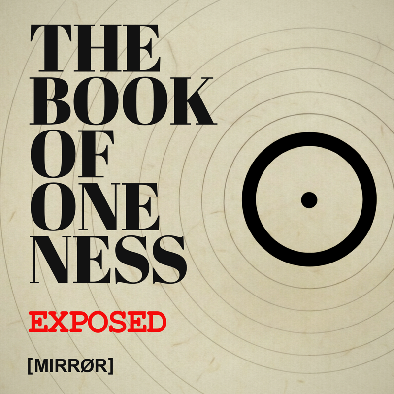

THE BOOK
One book. Five ways in. Same words, different rooms. Pick the one you'll actually finish. Or ask your local bookstore to order it for you.
Get the book.
Tap below: we'll send you to your closest retailer. Or ask your local bookstore or library to order it in.
LISTEN
THE BOOK OF ONENESS Exposed. One episode per Fracture, heard in full, then taken apart.

Two voices examining the mechanics of one Fracture at a time. Released as the series unfolds.
WATCH
Landscape deep dives. One per Fracture: a narrated examination of the mechanics, generated with NotebookLM. The full BOOE conversation rendered in motion.
EXPLORE
Twenty Parts. One hundred forty-three Fractures, named precisely. Fifty Collapses, reserved for those who finish the arc. THE MIND, mapped. Not interpreted.
GLOSSARY
The language of THE BOOK OF ONENESS, defined precisely. Filter by bucket or search.
ABOUT
The Story of The Self behind this work is not relevant.
THE BOOK OF ONENESS was written to stand without Identity.
So the structures shaping experience can be examined.
// Who is [MIRRØR]?
[MIRRØR] has no public identity. The Story of The Self behind this work is not relevant: not as belief, not as doctrine, not as instruction. The work stands without it.
// What is THE BOOK OF ONENESS?
A structural examination of how THE MIND constructs IDENTITY, SEPARATION, and THE STORY OF THE SELF. 143 Fractures. Not self-help. Not spirituality. A mirror.
// Where can I buy it?
Worldwide. The GET THE BOOK link auto-routes to your closest retailer: Amazon, Bookshop, Barnes & Noble, or IngramSpark, by region.
// What is BOOE?
BOOK OF ONENESS EXPOSED: the podcast. One episode per Fracture. The chapter read in full, followed by a two-voice AI examination of the mechanics. Launching as the feed goes live.